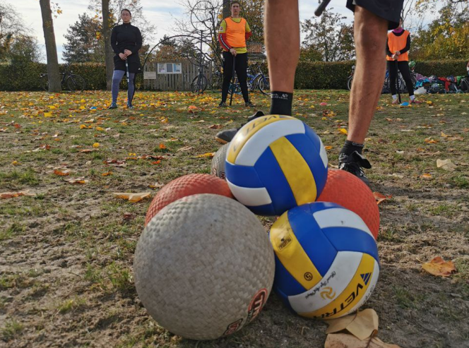
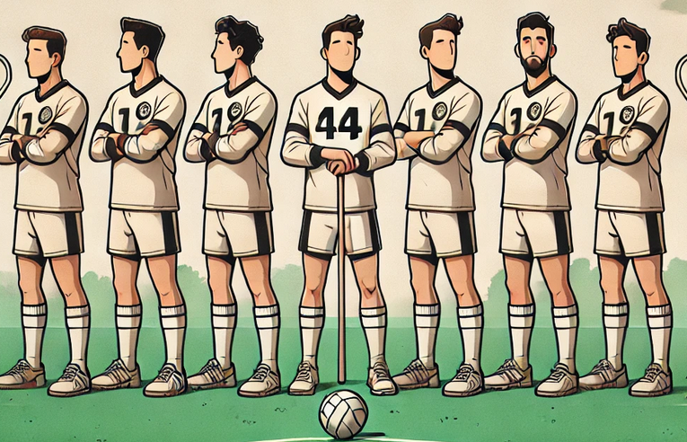

Black Forest Bowtruckles
Quadball Club Freiburg
Aktuelles

Überschrift 1
Kurzer Text zu den Neuigkeiten...

Überschrift 2
Kurzer Text zu den Neuigkeiten...

Was ist Quadball?
Quadball ist ein spannender, dynamischer und inklusiver Mannschaftssport, der Elemente aus Rugby, Handball und Dodgeball kombiniert. Ursprünglich inspiriert von Quidditch, hat sich Quadball mittlerweile zu einer eigenständigen Sportart entwickelt, die auf der ganzen Welt gespielt wird.
Mehr über QuadballUnser Team
Wir sind die Black Forest Bowtruckles, das Quadball-Team aus Freiburg. Unsere Mannschaft besteht aus talentierten und motivierten Spielerinnen und Spielern, die mit Leidenschaft und Teamgeist diesen spannenden Sport ausüben.
Mehr über uns
